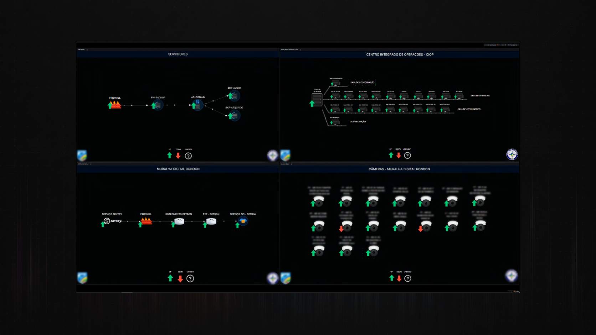
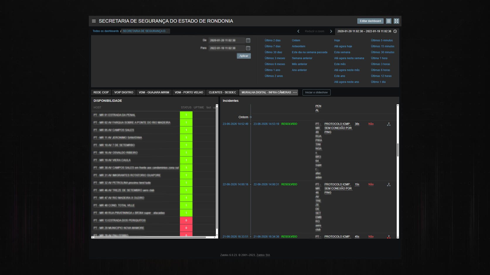
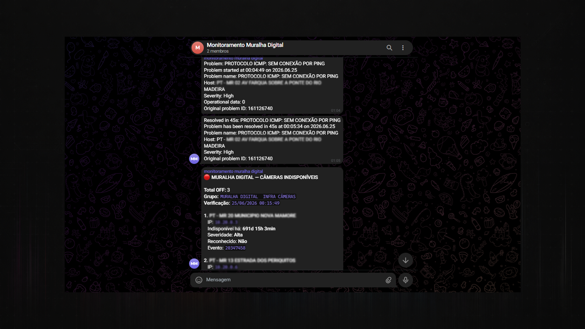
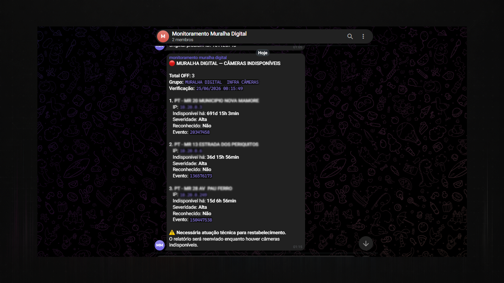

Observabilidade e Monitoramento
Observabilidade com Zabbix e Grafana
Base técnica de monitoramento, dashboards e alertas apresentada em formato público seguro.
Visão Geral
O case consolida uma trilha de observabilidade com coleta, visualização e notificação, preservando apenas a camada técnica reutilizável da solução.
Desafio Técnico
O desafio era organizar monitoramento de hosts, criação de dashboards e regras de alerta em uma base coesa, capaz de apoiar operação técnica.
Solução Desenvolvida
A solução combina Zabbix como plataforma de monitoramento, Grafana como camada de visualização e integrações auxiliares para notificação.
Arquitetura / Fluxo
Ilustrações Técnicas
Registros visuais, diagramas ou representações técnicas utilizados para contextualizar a arquitetura, o fluxo e os resultados do projeto.




Entregas Técnicas
- Cadastro e organização de hosts monitorados.
- Regras de alerta e notificação.
- Dashboards para visualização de estado.
- Integração com mensageria para avisos operacionais.
- Scripts auxiliares de configuração e suporte.
Competências Demonstradas
- Implantação de monitoramento.
- Integração de camadas de observabilidade.
- Configuração de alertas.
- Documentação operacional.
- Consolidação de dashboards e notificações.
Resultado Técnico
O material evidencia resultados concretos em observabilidade, com implementação de coleta, visualização, monitoramento e alertas, demonstrando domínio técnico aplicado